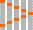

Components 参考文档
PartImageAnimation控件
PartImageAnimation控件能动画显示一个图片组。查看详细
继承自Item。
参见QML Item Element
参见QML Item Element
PartImageAnimation控件提供了一个帧动画的解决方案，你只需要准备一副帧序列的图片。
下面这个例子被包含在ExamplePartImageAnimation.qml:
PartImageAnimation {
image.source: "file:ExamplePartImageAnimation/connecting.png"
partCount: 10
timer.interval: 100
}
PartImageAnimation是将一个完整的图片做分割显示，对图片源有简单要求
比如：这个图片你需要明确一下几个问题：
你不需要指明PartImageAnimation的大小，当你设置好image.source和partCount后，会自动计算的。
image : Image
参见QML Image Element。
partCount : int
这个属性设置图片帧的数量。
index : int
这个属性指示当前帧。
direction : Qt::Orientation
这个属性描述图片源帧的排列方向，默认为Qt.Vertical。
timer : Timer
通过这个属性，我们可以控制帧动画的速率，是否循环播放等状态。
具体使用方法参加QML Timer Element。